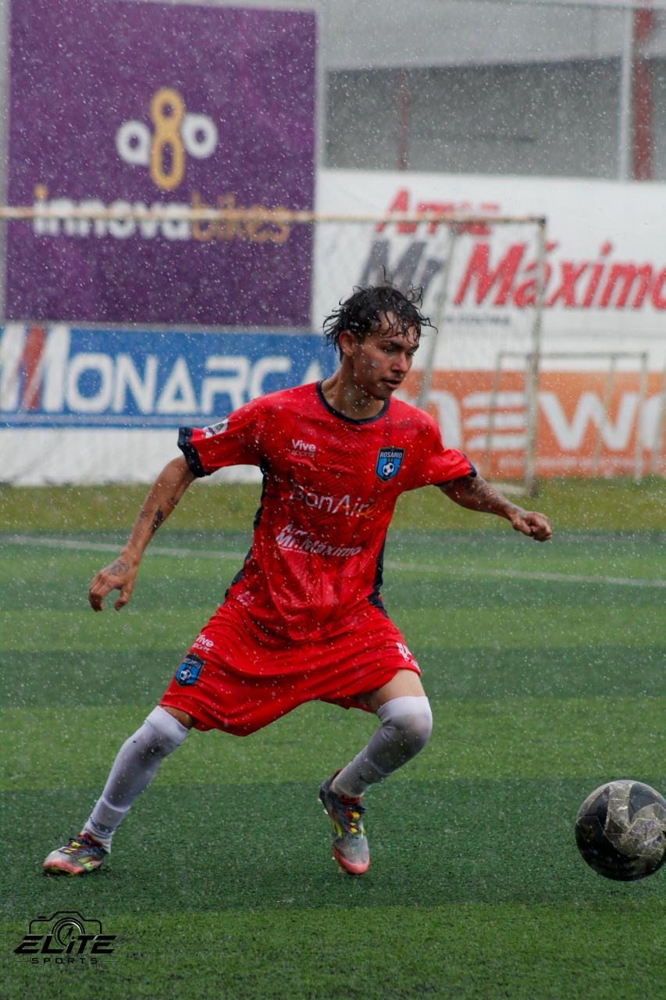
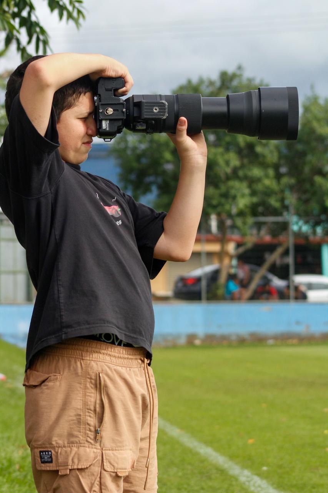

PARTIDOS
Cobertura de encuentros deportivos: las jugadas, las emociones y lo que ocurre entre ellas.

DETRÁS DE CADA IMAGEN
01 — 05
Mi trabajo consiste en capturar esos segundos que suceden una sola vez. Un gol, una celebración, un salto, una victoria o un momento de esfuerzo. Cada fotografía cuenta una historia.
TRABAJO SELECCIONADO
Instantes reales. Historias que siguen vivas después del último minuto.
Pronto habrá fotografías en esta sección.
Fotografías 03–06 pendientes de confirmar por equipo o torneo.
MI MIRADA
EMOCIÓN · ESFUERZO · PASIÓN · VICTORIA
Estar en el lugar correcto. Esperar el momento exacto. Capturarlo para siempre.
COBERTURA DEPORTIVA
Tú vives la experiencia. Yo me encargo de que puedas volver a ella.
Cobertura de encuentros deportivos: las jugadas, las emociones y lo que ocurre entre ellas.
Fotografías de competencias para equipos, jugadores y organizaciones deportivas.
Sesiones para deportistas que quieren mostrar su esfuerzo, personalidad y pasión.

SOBRE MÍ
FOTÓGRAFO DEPORTIVO
Me apasiona la fotografía deportiva porque cada competencia tiene una historia diferente.
Mi objetivo es capturar la energía, el esfuerzo y la emoción de cada deportista, y convertir esos momentos en recuerdos que puedan volver a vivirse a través de una fotografía.
MI ESTILO
Fotografías llenas de movimiento, emoción y personalidad.
Cada partido tiene momentos que merecen ser recordados.
Detrás de cada fotografía hay esfuerzo, pasión y dedicación.
HABLEMOS DE TU EVENTO
¿Tienes un partido, torneo o competencia? Estoy disponible para realizar cobertura fotográfica deportiva.
CONTACTAR POR WHATSAPP +506 8731-6410